Положение движущейся точки удобно описывать в декартовых координатах. Свяжем с вращением точки по окружности стандартную декартову систему координат.
Переход от угла поворота точки к ее декартовым координатам задает основные тригонометрические операции: синус и косинус.
Рассмотрим вращение по единичной окружности с центром O точки P с начальным положением P0.
Выберем декартову систему xOy, взяв в качестве положительного луча оси абсцисс Ox луч OP0, а в качестве оси ординат Oy ось, повернутую от Ox на угол 𝜋 2 в выбранном положительном направлении вращения. При повороте на угол t точка P0 переходит в точку Pt.
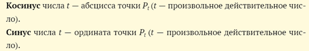
Таким образом, координаты точки Pt в определенной выше системе координат равны по определению косинусу и синусу t. В обычных обозначениях: Pt(x; y), где x = cos t, y = sin t.
Положение точки в декартовой системе координат
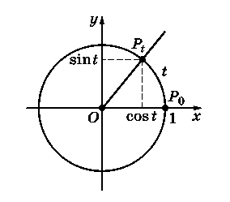
Координаты точек – границ четвертей
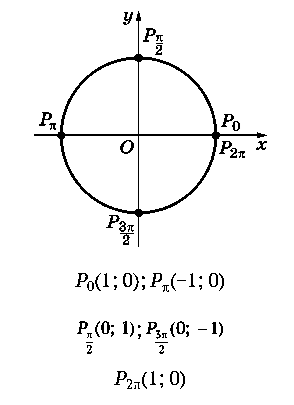
Дополнительные операции
Вместе с операциями синус и косинус можно определить еще две операции: тангенс и котангенс:
Разумеется, операции нахождения тангенса и котангенса определены не для всех углов t, а только для тех, при которых знаменатели дробей не обращаются в нуль
3. Свойства синуса и косинуса:
1) операции нахождения синуса и косинуса числа (угла) t определены при любом действительном t;
2) при вычислении синуса и косинуса наблюдается периодичность — значения
синуса и косинуса для двух значений t, отличающихся на 2π, равны: sin (t + 2p) = sin t и cos (t + 2p) = cos t при любом значении t;
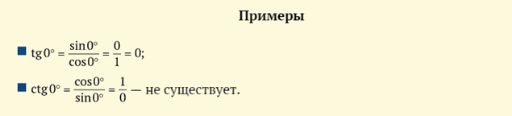
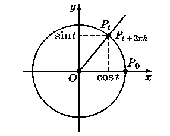
3) в каждой четверти как синус, так и косинус сохраняют постоянный знак. Под этим понимается, что знаки sin t и cos t зависят от того, в какую четверть попадает точка Pt.
Знаки синуса
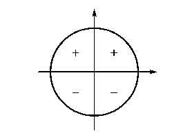
Знаки косинуса
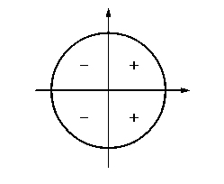
Знаки тангенса и котангенса
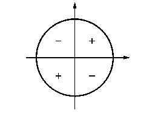
4.Формулы приведения.
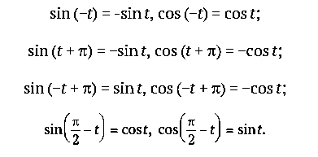
Первоначально тригонометрические функции использовались для геометрических вычислений, в астрономии, картографии и других естественных науках, где нужно было «решать треугольники», т. е. вычислять длины отрезков и расстояния между точками, зная различные углы между направлениями.
При переходе к «математике переменных величин» появилась необходимость описывать периодические процессы — от астрономических наблюдений за движением небесных тел до гармонических колебаний, значение которых резко возросло в связи с развитием теории электричества.
Колебания упругой пружины
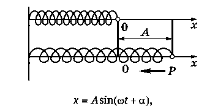
где ω — коэффициент, характеризующий упругость пружины; A — расстояние, на которое оттянута пружина в момент времени t (амплитуда колебаний); α — начальное отклонение. С помощью тригонометрических операций с отдельными числами можно определить тригонометрические функции, которые и стали основой ряда разделов математики.
Обратим внимание на то, что для вычислений хватило бы одной тригонометрической операции, например синуса.
Остальные операции можно выразить через синус:
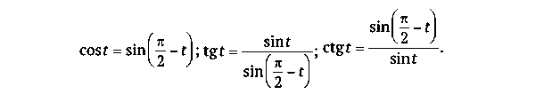
Имеются еще две операции: секанс и косеканс:
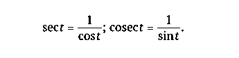
Итак, изучение тригонометрии будет вестись в следующей последовательности:
- преобразование выражений, содержащих тригонометрические операции;
- изучение функций, задаваемых этими операциями;
- решение уравнений, в которые входят тригонометрические функции.
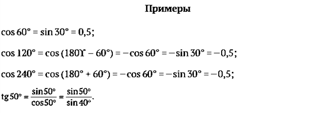
Основные свойства тригонометрических операций отражают их связь с вращательным движением, которое в свою очередь обладает разнообразной симметрией. Запишем в таблицу сравнение свойств вращения точки P и ее координат Pt(cos t; sin t) при повороте на угол t:
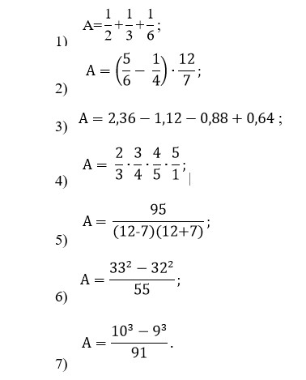
Центральная симметрия
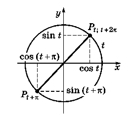
Симметрия относительно прямой у=х
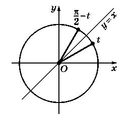
К числу важнейших свойств тригонометрических операций следует отнести также основное тригонометрическое тождество:

Оно является следствием теоремы Пифагора.
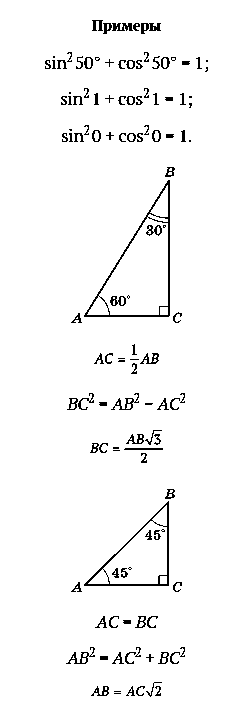
Решение примеров
1. Вычисление значений
1) Прежде всего полезно помнить значения синуса, косинуса, тангенса и котангенса для «знаменитых» углов (0°, 30°, 45°, 60°, 90°), т. е. для некоторых частных значений аргумента t. Эти значения находятся с помощью известных простых теорем планиметрии.
Приведем таблицу значений синуса, косинуса, тангенса и котангенса для углов, наиболее часто встречающихся в заданиях:
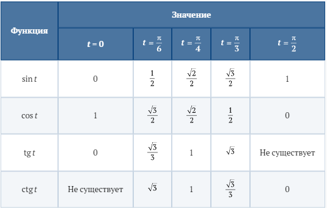
2) Значения тригонометрических операций для остальных углов находят с помощью калькулятора (например, sin 1 = 0,8415; cos 1 = 0,5403; tg 1 = 1,5574; ctg 1 = 0,6421).
3) Зная значение одной из четырех тригонометрических операций, можно найти значения остальных с точностью до знака.
Для уточнения знака нужна дополнительная информация (например, достаточно знать, в какой четверти находится угол).
2. Определение знака. Сначала определяем четверть, в которой находится угол (I…IV), и затем — знак, используя таблицу или с помощью тригонометрического круга.
3. Сведение к углу I четверти. Симметрия значений тригонометрических операций позволяет сводить их вычисление к нахождению углов I четверти. Соответствующие правила называют формулами приведения.
Например, к формулам приведения можно отнести следующие: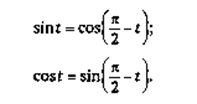
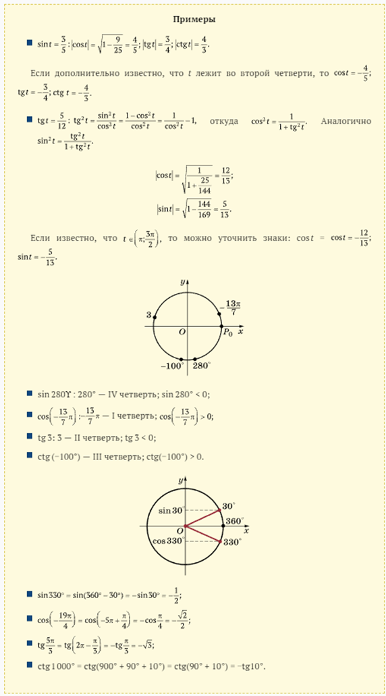
ВОПРОСЫ И ЗАДАНИЯ
1. В каких четвертях косинус отрицателен?
2. В каких четвертях тангенс положителен?
3. Как меняются координаты точки при симметрии относительно начала координат?
4. Как меняются координаты точки при осевых симметриях относительно осей координат?
5. Определите знак числа:
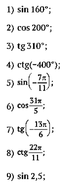
6. Вычислите
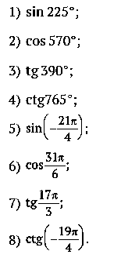
7.Зная значение одной из тригонометрических функций, найдите значения остальных:
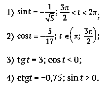